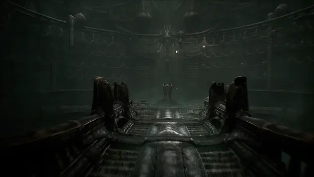
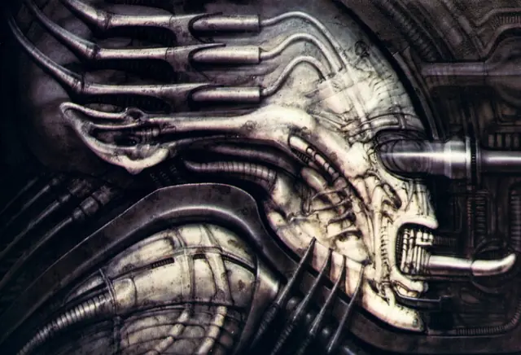
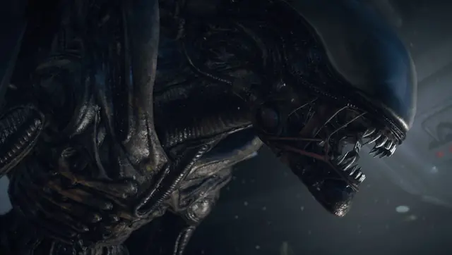
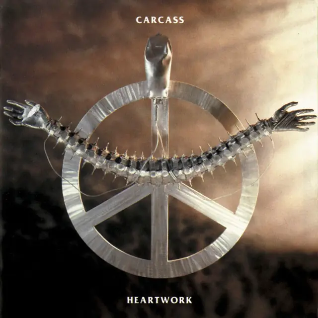
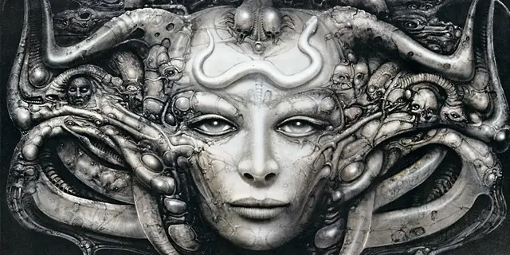
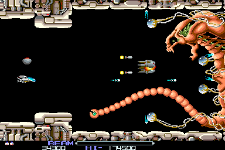
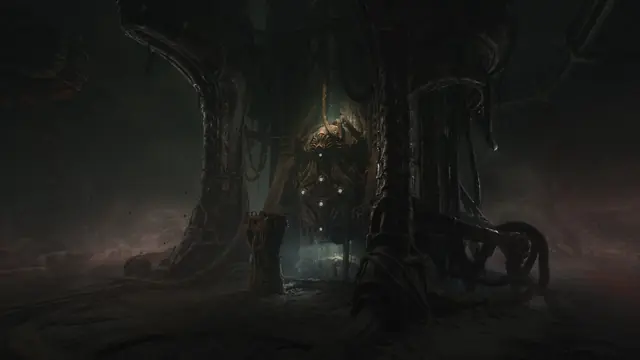
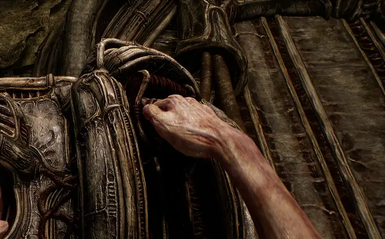
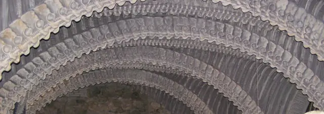

The feel
Biomechanical art fuses body and machine until you cannot say which came first. H. R. Giger called his approach Biomechanics, the symbiosis between human and machine.1 In his paintings, bits of machinery turn out to be human genitals, and walls that look like circuitry are made of bones, sinews and tendons cast in an impossible translucent metal.2 Scorn turns this into a place you walk through: a hallway is a ribbed oesophagus, a door is a toothy maw, and there are very few straight lines.3
It disturbs because the anatomy is working. Giger, who had been an industrial designer, saw Alien's creature "in terms of its functions",2 and Scorn's director Ljubomir Peklar treats human anatomy "in a utilitarian way", as organs and flesh working together as one system.3 Peklar wants dread that creeps in slowly instead of jump scares,4 and he plays on a reflex: people are conditioned to see their own organs, bones and tissue as repulsive.5
- wet
- ribbed
- symmetrical
- airbrushed
- reverent
- engineered
- intimate
Where it comes from
Swiss artist H. R. Giger (1940 to 2014) developed what he later called Biomechanics while studying industrial design in Zürich, and was introduced to the airbrush in 1971 to 1972.1 He painted the cover of Emerson, Lake & Palmer's Brain Salad Surgery in 1973, and after his book Necronomicon (1977) reached Dan O'Bannon and Ridley Scott, Scott chose him for Alien (1979), and his designs won him a share of the 1980 Oscar for visual effects.1 Arcade games of the 1980s such as R-Type and Contra copied his style wholesale,6 Metroid's whole team was affected by his design work,7 and Dark Seed (1992) was built from his paintings.1 Ebb Software's Scorn, released in 2022,8 took Giger and Zdzisław Beksiński as its two main visual influences.5
Core elements
Fused organic and mechanical forms
Giger called the creature he built for Alien "half organic and half technical".2 The beings in his paintings seem at once organic and metallic, and merge with each other and with their surroundings, the way the Space Jockey's body seems to meld with its chair.9
Functional anatomy
Organs do work. Giger designed the facehugger as "a practical biological form", with a spring-like tail to jump out of the egg and two great hands to hold a man's head.2 In Scorn the gun has an organic part, but it still fires on the same principle as an ordinary gun.3
Bone architecture
Architecture is skeleton. In Giger's own museum bar, double vertebral arches cross the vaulted ceiling and pelvic bones crown the backs of the chairs.10 A pillar in Scorn looks carved from muscle and bone,3 and its director calls Zdzisław Beksiński's decaying structures unmatched.11
Airbrushed greys
Colour is held back. Giger made his name with monochromatic paintings,12 and he called colour "a distraction".13 Even his Brain Salad Surgery paintings for Emerson, Lake & Palmer were airbrushed in pure shades of grey.12
Sexual and birth imagery
Giger used sexual imagery to create fear,13 and he turned birth into horror: in Birth Machine (1968) the womb becomes the chamber of a pistol, with embryos lined up like cartridges.12 Peklar chose the style for its world of man and technology "exalted by erotic desire".4
Body-operated machines
In games the player's body becomes part of the machine. Scorn's machines are worked by grabbing their controls,8 its weapons have mouths where the bullets go in, and the hero pushes his arm inside a terminal to start a machine.5
How to do it
Start from real anatomy
Scorn's team took many parts of human anatomy as a starting point, then morphed, combined and exaggerated them until the shapes looked right.5 Giger built the Alien suit on a cast of a tall man's body, adding plasticine, real bones for the rib cage, and tubes and piping.2
Block out assets in first person
Every asset in Scorn was handcrafted, which, Ebb Software says, is not how most games are made.8 Each one began as a concept, became a rough model checked from the first-person view with basic animation rigging, and was adjusted until it matched the concept before the detailed high-poly modelling.11
Run tubes along curves
Giger's tubes and piping are the technical half of his creatures.2 Lay them on curves. A sculpting brush in curve mode is applied along a curve you draw, with a step value that sets the spacing of the curve's points and a snap mode that keeps the curve on the surface underneath; insert brushes can follow the curve too.14 For hard tubing, extrude a profile curve along every spline and scale it at each control point.15
Model the relief in 3D
The relief at the entrance of Alien's derelict ship was really modelled in plaster, not painted to look rounded: lumber covered with lath and webbing, built up with pre-cast plaster forms, then painted.2 In a game, spend the polygons. Peklar says his engine could handle the polycount these organic shapes need, and the light passes then fill their nooks and crannies.11
Backlight wet surfaces
On Alien's derelict set, Derek Vanlint kept everything wetted down so the water emphasised his three-quarter backlight, and for the egg chamber he added a laser across the top and a lot of smoke.16 Keep the creature in shadow: with brighter sets, audiences would have seen far more of it.2 Add height fog that is densest low down: a density value sets the layer's thickness, and a height falloff sets how quickly it thins as it rises.17
Airbrush in greys
Giger sprayed freehand, without frisket or templates; only in his N.Y.C. series did he use stamped metal parts as stencils for a skeletal underlayer.13 He began with ink and water for a warm sepia, and after 1973 added white to move from warm grey to cold, a grisaille.13 His first "airbrush style", from 1964 to 1968, was a toothbrush dipped in ink and rubbed across wire mesh, with a Rapidograph pen for solid blacks and a razor blade to scratch parts away.13
Record real destruction
Scorn's sound designers recorded themselves destroying vegetables, wood, bark, cardboard, chairs, pipes, meat and stones,8 and built a huge range of organic and mechanical sound from field recordings.11
Cheat sheet
- Palette
- Monochrome greys, warm sepia to cold13
- Paint
- Freehand airbrush, acrylic and ink13
- Creature build
- Body cast, plasticine, real bone, tubes and piping2
- Set relief
- Plaster on lath and webbing, modelled, not painted2
- Light
- Three-quarter backlight, wet surfaces, smoke16
- Sound
- Recorded destruction: meat, pipes, wood, stones8
- Retro mode
- 640 x 350 at 16 colours, like Dark Seed18
Do
- Give a creature's parts jobs to do, as Giger did with the facehugger's spring-like tail.2
- Start from real anatomy, then morph, combine and exaggerate it.5
- Keep colour out. Giger called it "a distraction".13
- Lead the player with light and sound, not colour.8
- Tell the story through the world, with no cutscenes.8
Avoid
- Big teeth, big eyes and bugs. Peklar watched concept artists fall back on all three whenever they ran out of ideas.3
- Weird for its own sake. Peklar wants familiarity: the relation between a person and an object, and how each changes the other.3
- Using Giger as surface decoration for aliens, monsters and strange planets. Peklar's complaint is that hardly anyone deals with what his work is about.5
- Pasting finished paintings into the background, as Dark Seed did. Its art was "not designed from the ground up to be a setting in a game".5
- Jump scares, loud sounds and spooky ghost children. Scorn tries to get under your skin slowly instead.4
Tools and tutorials
- Sculpting and Rendering a Biomech Creature Bust
ZBrush from a sphere to micro-detail, using Dynamesh, Curve and IMM brushes.
- Refining ZBrush Curve Brushes for tubular details
Short guide to the brush that makes all your hoses and cables.
- Blender: Curve to Mesh node
Sweep a ribbed profile along any curve to build hoses and ribs for free.
- How Scorn turned the art of H. R. Giger into a game world
Den of Geek talks to Ebb Software's creative director about style serving theme.
- ZBrush: Stroke palette, Curve
Curve Mode, Curve Step and Snap for drawing tubes along a surface.14
- Unreal Engine: Exponential Height Fog
Fog that gathers low down, with density and height falloff settings.17
Palette
Sampled from Scorn's halls and temple sky, Necronom I and IV, the Brain Salad Surgery cover and Dark Seed's frame.
Feel the vibe
Listen
Lustmord, a dark ambient composer, found out about Scorn and reached out to Ebb Software himself, and Aethek felt the same.8
YouTubeAn orchestra holding its breath, for the film whose creatures and derelict ship Giger designed.2
YouTubeThin synths under Giger's scanned paintings.18 Cheap and very strange.
YouTubeScraping, stabbing strings. Listen for how much of the fear comes from texture rather than tune.
YouTubeFrom Beastland, played live by Tristan Shone, a trained engineer who builds his own instruments.19
YouTubeGodflesh crossed early industrial music with primitive punk and metal around a drum machine.20 Body and engine locked to one tempo.
YouTube
More references









Games
- R-Type
One of the 1980s arcade games that copied Giger's style wholesale.6 Dobkeratops, the first boss, is the one to study.
- Dark Seed
Giger's art came on condition that the game ran at 640 by 350 instead of 320 by 200, which cut the palette from 256 colours to 16.18
- Prey
A living alien ship of flesh and machinery. Its developer named Giger first among its influences and was proudest of the ship's "living, glistening, bio-look".21
- Tormentum: Dark Sorrow
A painted point-and-click adventure. Its illustrator, Piotr Ruszkowski, built the world from his own dark paintings, inspired mostly by Beksiński and Giger.22
- Scorn
No conventional plot, or even language, so the environment tells the story.4
Film, art and more
- Necronomicon
One of the first copies went to Dan O'Bannon, who showed it to Ridley Scott, and Scott decided Giger was right for Alien.1
- Alien
Giger designed its creatures, the derelict ship, its dead pilot and the planet's landscapes.2
- Zdzisław Beksiński
Scorn's other main visual influence.5 Its director calls his decaying structures unmatched.11
- Tetsuo: The Iron Man
A visual parallel in live action. Watch how it turns a body into scrap metal.
- BLAME!
Tsutomu Nihei's manga, a parallel in ink. Study its cables and megastructures at vast scale.
- Heartwork
Giger's cover for Carcass, one of his album covers along with Brain Salad Surgery and Koo Koo.13
Sources
- 1HR Giger Biography
- 2H.R. Giger: Behind the Alien Forms
- 3Behind the beautifully grotesque art of Scorn
- 4Scorn game director Ljubomir Peklar talks sexual imagery & "weird organic structures"
- 5How Scorn Turned the Art of H.R. Giger into a Nightmarish Horror Game World
- 6Dark Seed
- 7The Alien Franchise Inspired One Of The Best Sci-Fi Video Games Ever Made
- 8Enter the Nightmarish World of Scorn Today with Game Pass
- 9H.R. Giger, 1940-2014: the Xenomorph’s father
- 10HR Giger Bar, Gruyères
- 11Creating the Unreal dystopian surrealism and biomechanical horrors of Scorn
- 12H.R. Giger's nightmare realm
- 13Alienated: The Biomechanical Surrealism of H.R. Giger
- 14Stroke palette: Curve
- 15Curve to Mesh Node
- 16'Alien' and Its Photographic Challenges
- 17Exponential Height Fog in Unreal Engine
- 18That Time H.R. Giger Teamed Up For A Series of ‘90s Horror Games
- 19Author & Punisher Creates Metal in His Own Twisted Image
- 20A conversation with Justin Broadrick of Godflesh ahead of their Detroit performance
- 21Prey: Signed, sealed, developed
- 22Tormentum – Dark Sorrow: Exclusive Q&A with OhNoo Studio